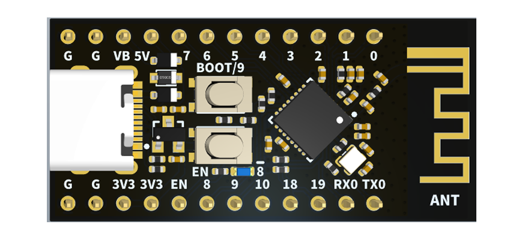
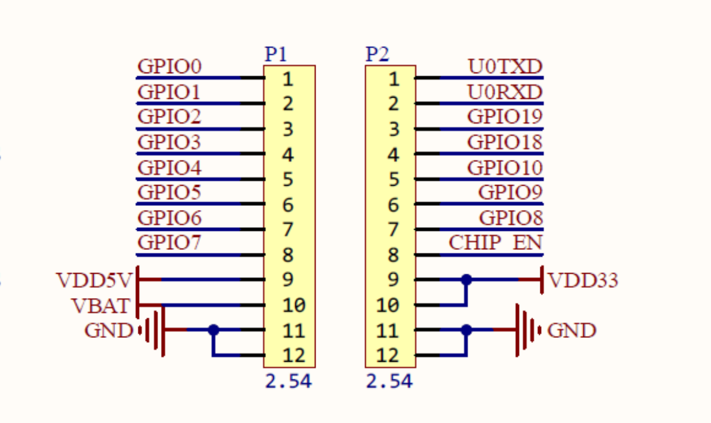
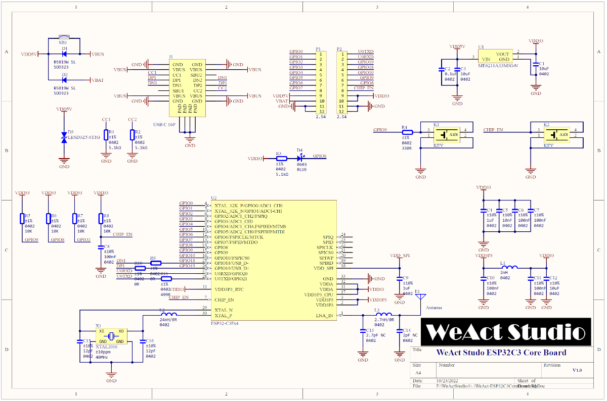
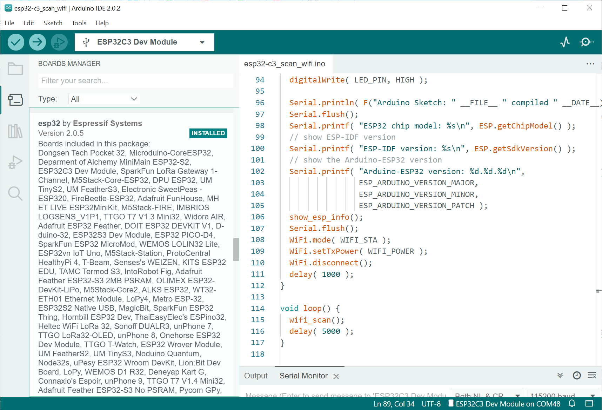
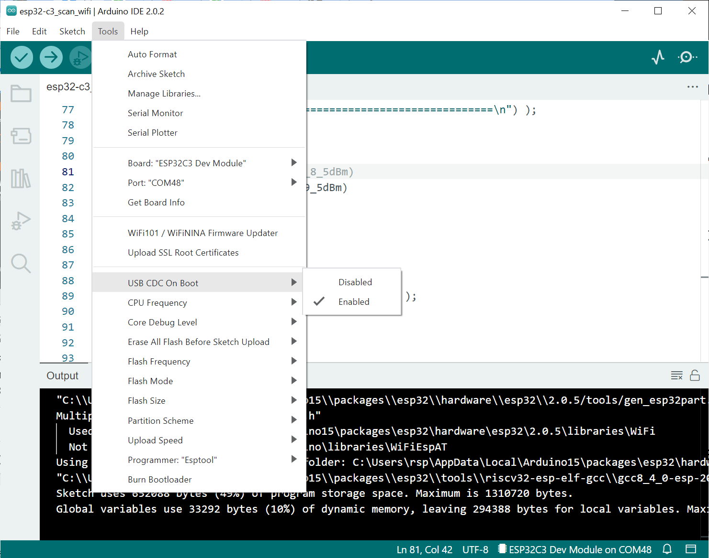
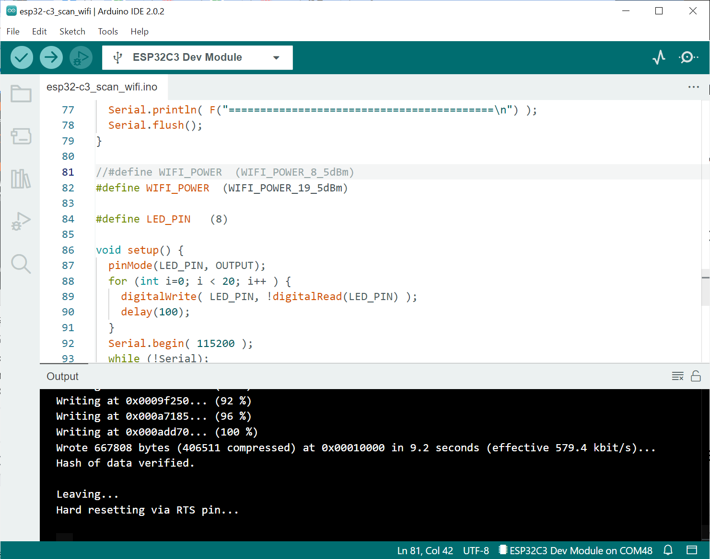
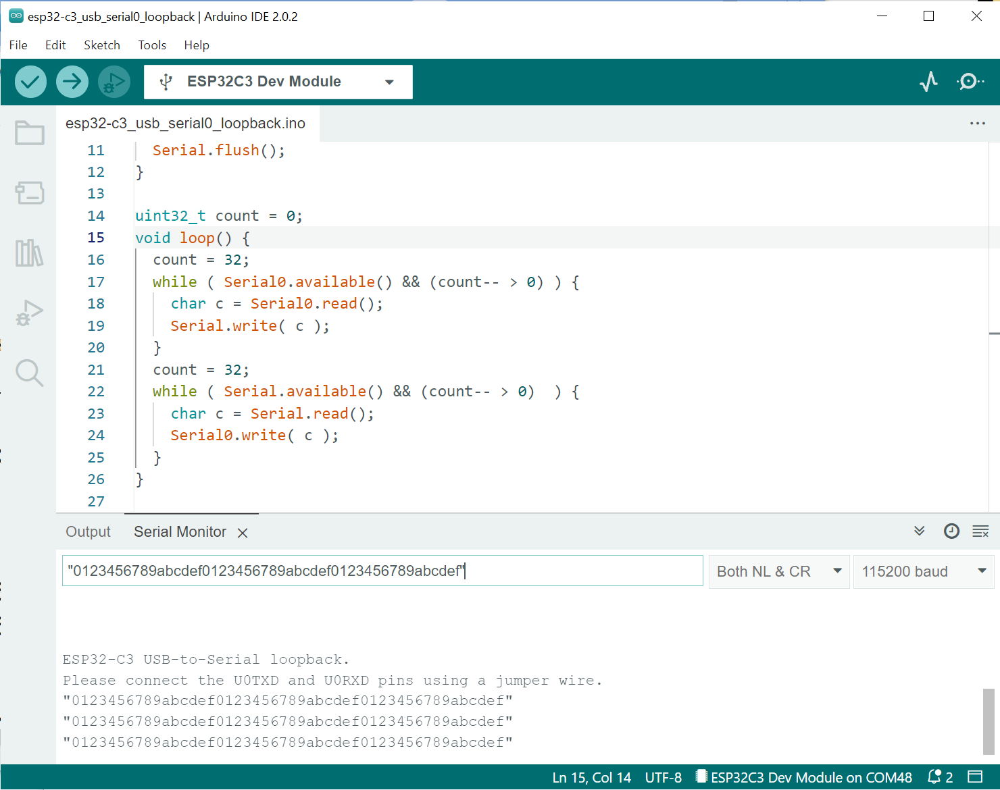

การเริ่มต้นใช้งานบอร์ด WeAct Studio ESP32-C3FH4 Mini Core#
▷ WeAct Studio ESP32-C3FH4 Mini Core#
บทความนี้กล่าวถึง การทดลองใช้งานบอร์ดไมโครคอนโทรลเลอร์ ESP32-C3FH4 Mini Core V1.0 ของบริษัท WeAct Studio
→ แนะนำให้อ่านบทความที่เกี่ยวข้อง: การเริ่มต้นใช้งานชิป ESP32-C3 (RISC-V CPU Core)
ข้อมูลเกี่ยวกับบอร์ดนี้
- มีตัวประมวลผลหลักคือ ชิป Espressif ESP32-C3FH4 SoC
- 32-bit RISC-V (single-core,160MHz)
- On-chip memory: 400KB SRAM, 384KB ROM, 4MB Flash
- ชิป ESP32-C3FH4 สามารถทำงานในสภาพแวดล้อมที่มีอุณหภูมิสูงกว่า ESP32-C3FN4 และได้รวมหน่วยความจำ QSPI Flash ไว้ในชิปเดียวกันแล้ว
- รองรับการสื่อสารข้อมูลไร้สาย 2.4GHz Wi-Fi (IEEE 802.11 b/g/n) และ Bluetooth / BLE 5.0
- มีปุ่มกด BOOT / GPIO-9 (10k pull-up) สำหรับการเลือกเข้าสู่โหมด USB-Serial Bootloader
และ CHIP_EN (10k pull-up) สำหรับรีเซตการทำงานของชิป
- ขาของชิป ESP32-C3 จำนวนหนึ่ง จะถูกใช้งานเป็นขาที่เรียกว่า Strapping Pins และจะต้องมีลอจิกตามที่กำหนดไว้เมื่อชิปถูกรีเซต แล้วหลังจากนั้นจึงใช้เป็นขา GPIO ตามปรกติได้ เช่น ขาสำหรับเลือกโหมดการทำงานหลังจากรีเซต (Boot Mode Selection)
- ถ้าขา GPIO-9 มีลอจิกเป็น LOW (0) และขา GPIO-8 เป็น HIGH (1) จะเข้าสู่ ROM Serial Bootloader หลังจากรีเซต และสามารถใช้โปรแกรม esptool.py ในการอัปโหลดโปรแกรมได้ แต่ถ้า GPIO-9 เป็น HIGH (1) จะเข้าสู่การทำงานและรันคำสั่งของโปรแกรมตามปรกติ (Normal Execution Mode)
- เชื่อมต่อกับคอมพิวเตอร์ของผู้ใช้ด้วยคอนเนกเตอร์ USB Type-C
- ไม่มีชิป USB-to-Serial Converter / Bridge ดังนั้นจะต้องเลือกใช้ USB CDC on Boot: Enabled สำหรับการสื่อสารข้อมูลแบบอนุกรมผ่านบัส USB เมื่อเขียนโปรแกรมด้วย Arduino-ESP32 Core
- ขา U0RXD / U0TXD ตรงกับขา GPIO20 / GPIO21 ตามลำดับ
(ตรงกับการใช้งาน
Serial0ของ Arduino API ซึ่งจะใช้งานวงจร Hardware Serial / UART ที่อยู่ภายในชิป) - มีไอซีสร้างความถี่ (Crystal Oscillator): 40MHz
- มีวงจร On-board LED (Active-Low) ที่ขา GPIO-8 (10k pullup)
- มีไอซี ME6211A33M3G (LDO) ทำหน้าที่ควบคุมและแปลงแรงดันไฟฟ้า VBUS (ไม่เกิน 5.5V) ให้เป็น +3.3V สำหรับการทำงานของชิป ESP32-C3FH4
- มีขา VBUS และ VBAT เป็นแรงดันไฟฟ้าอินพุต ผ่านตัวไดโอดอย่างละตัวเพื่อนำไปต่อกับ VDD5V ของบอร์ด เพื่อนำไปใช้กับไอซี ME6211A33M3G เพื่อแปลงแรงดันไฟฟ้าให้เป็น 3.3V
- มีสายอากาศของบอร์ดเป็นแบบ PCB Trace
- ไฟล์ผังวงจร Schematic (.pdf)

รูป: Board Layout (มุมมองจากด้านบน หรือ Top View)

รูป: Pin Out แสดงตำแหน่งของขาแบบ Pin Header (2.54mm spacing)

รูป: ผังวงจรของบอร์ด WeAct Studio ESP32-C3FH4 Mini Core
▷ Arduino Sketch: Wi-Fi Scanning#
ถัดไปเป็นการสาธิตขั้นตอนใช้งานซอฟต์แวร์ Arduino IDE v2.0.x และได้ติดตั้ง Arduino ESP32 Core ใน Arduino IDE แล้วหรือไม่ ทดลองใช้เวอร์ชัน V2.0.5 (Online Doc) ไว้แล้ว เพื่อทดลองคอมไพล์ และอัปโหลดโปรแกรมที่ได้ไปยังบอร์ดไมโครคอนโทรลเลอร์
การติดตั้ง Arduino ESP32 Core ใน Arduino IDE ทำได้ง่าย โดยไปที่เมนู "File -> Preferences -> Additional Boards Manager URLs" แล้วเพิ่มรายการ ซึ่งเป็น URL ของไฟล์ .json ดังต่อไปนี้
https://raw.githubusercontent.com/espressif/arduino-esp32/gh-pages/package_esp32_dev_index.json
จากนั้นใน Boards Manager ให้ค้นหาและติดตั้งแพ็กเกจต่าง ๆ สำหรับ esp32 เวอร์ชันล่าสุด

รูป: ตรวจสอบใน Boards Manager ของ Arduino IDE เพื่อดูว่า ได้มีการติดตั้ง Arduino ESP32 Core ใน Arduino IDE แล้วหรือไม่
กำหนดการตั้งค่าก่อนทำขั้นตอน Build ในกรณีนี้ สามารถเลือกใช้บอร์ด
ESP32C3 Dev Module เนื่องจากยังไม่มีรายการบอร์ด WeAct Studio ESP32-C3 Mini Core
ตั้งค่า USB CDC On Boot โดยเปลี่ยนจาก Disabled ให้เป็น Enabled

รูป: การตั้งค่าตัวเลือกก่อนทำขั้นตอน Build Sketch จากโค้ดตัวอย่าง
คำแนะนำ: ในการใช้งานบอร์ด ESP32-C3 ที่ไม่มีชิป USB-to-Serial Bridge ให้กดปุ่ม BOOT ค้างไว้ แล้วกดปุ่ม EN แล้วปล่อย เพื่อทำการรีเซตการทำงานของบอร์ด ให้เข้าสู่โหมด ROM Serial Bootloader จากนั้นใน Arduino IDE จึงสามารถมองเห็นหมายเลขพอร์ตอนุกรมของบอร์ด แล้วเลือกพอร์ตดังกล่าวในขั้นตอนการอัปโหลด และเมื่ออัปโหลดได้สำเร็จแล้ว ให้กดปุ่ม EN แล้วปล่อย เพื่อรีเซตการทำงานอีกครั้ง แล้วบอร์ดจะเริ่มทำงานตาม Arduio Sketch ตามที่ได้อัปโหลดไปเขียนลงในหน่วยความจำของบอร์ด
เมื่ออัปโหลด Arduino Sketch ครั้งแรกได้สำเร็จแล้ว ครั้งถัดไป ไม่จำเป็นต้องกดปุ่มใด ๆ เพื่อเข้าสู่ Serial Bootloader แต่ต้องเลือกหมายเลขพอร์ตให้ถูกต้องตรงกับที่ใช้งานจริง

รูป: การทำขั้นตอน Upload Sketch ไปยังบอร์ดไมโครคอนโทรลเลอร์เมื่อนำมาเชื่อมต่อกับคอมพิวเตอร์ของผู้ใช้แล้วทางพอร์ต USB
ตัวอย่างโค้ด: esp32-c3_scan_wifi.ino
#include "esp_arduino_version.h"
#include "esp_idf_version.h"
#include "esp_chip_info.h"
#include "WiFi.h"
void show_esp_info() {
esp_chip_info_t chip_info;
esp_chip_info( &chip_info ); // get ESP32 chip info
char sbuf[32];
switch (chip_info.model) {
case CHIP_ESP32:
sprintf( sbuf, "ESP32" ); break;
case CHIP_ESP32S2:
sprintf( sbuf, "ESP32-S2" ); break;
case CHIP_ESP32S3:
sprintf( sbuf, "ESP32-S3" ); break;
case CHIP_ESP32C3:
sprintf( sbuf, "ESP32-C3" ); break;
case CHIP_ESP32H2:
sprintf( sbuf, "ESP32-H2" ); break;
default:
sprintf( sbuf, "ESP Unknown" ); break;
}
Serial.printf( "ESP Chip: %s\n", sbuf );
// show the ESP32 unique chip ID and Flash size (MBytes)
if (esp_flash_init(esp_flash_default_chip)==ESP_OK) {
uint64_t id = 0; // 64-bit value
uint32_t flash_size = 0; // flash size in bytes
if (esp_flash_read_unique_chip_id(NULL, &id)==ESP_OK) {
Serial.printf( "Chip ID: 0x%08x\n", id );
}
if (esp_flash_get_size(NULL, &flash_size)==ESP_OK) {
Serial.printf( "Flash size: %lu MB\n", flash_size/(1024*1024) );
}
}
Serial.printf( "Number of CPU cores: %u\n", chip_info.cores );
Serial.printf( "Active CPU core ID: %lu\n", cpu_hal_get_core_id() );
Serial.printf( "Chip revision: rev.%u\n", chip_info.revision );
Serial.flush();
Serial.printf( "Xtal Freq.: %4lu MHz\n", getXtalFrequencyMhz() );
Serial.printf( " CPU Freq.: %4lu MHz\n", getCpuFrequencyMhz() );
Serial.printf( " APB Freq.: %4lu MHz\n", getApbFrequency()/1000000UL );
Serial.printf( "FreeRTOS tick rate: %lu ticks/sec\n", pdMS_TO_TICKS(1000) );
Serial.printf( "FreeRTOS tick period: %lu msec\n", portTICK_PERIOD_MS );
Serial.printf( "Free Heap: %lu bytes\n", esp_get_free_heap_size() );
Serial.flush();
// show MAC address
uint8_t mac[8];
if ( esp_read_mac(mac,ESP_MAC_WIFI_STA)==ESP_OK ) {
Serial.printf( "MAC: %02x:%02x:%02x:%02x:%02x:%02x\n",
mac[0],mac[1],mac[2],mac[3],mac[4],mac[5] );
}
Serial.flush();
delay(10);
}
void wifi_scan() {
Serial.println( "\nWiFi scanning..." );
int n = WiFi.scanNetworks();
if (n == 0) {
Serial.println( "No APs found" );
} else {
Serial.printf( "Number of APs found: %d\n", n );
for ( int i=0; i<n; i++ ) {
Serial.printf( "%d) \"%s\" (%d)\n",
(i+1), WiFi.SSID(i).c_str(), WiFi.RSSI(i) );
}
}
Serial.println( F("==========================================\n") );
Serial.flush();
}
//#define WIFI_POWER (WIFI_POWER_8_5dBm)
#define WIFI_POWER (WIFI_POWER_19_5dBm)
#define LED_PIN (8) // onboard LED at GPIO-8
void setup() {
pinMode(LED_PIN, OUTPUT);
for (int i=0; i < 20; i++ ) {
digitalWrite( LED_PIN, !digitalRead(LED_PIN) );
delay(100);
}
Serial.begin( 115200 );
while (!Serial);
digitalWrite( LED_PIN, HIGH );
Serial.println( F("Arduino Sketch: " __FILE__ " compiled " __DATE__) );
Serial.flush();
Serial.printf( "ESP32 chip model: %s\n", ESP.getChipModel() );
// show ESP-IDF version
Serial.printf( "ESP-IDF version: %s\n", ESP.getSdkVersion() );
// show the Arduino-ESP32 version
Serial.printf( "Arduino-ESP32 version: %d.%d.%d\n",
ESP_ARDUINO_VERSION_MAJOR,
ESP_ARDUINO_VERSION_MINOR,
ESP_ARDUINO_VERSION_PATCH );
show_esp_info();
Serial.flush();
WiFi.mode( WIFI_STA );
WiFi.setTxPower( WIFI_POWER );
WiFi.disconnect();
delay( 1000 );
}
void loop() {
wifi_scan();
delay( 5000 );
}
▷ Arduino Sketch: USB-to-Serial Loopback#
ถัดไปเป็นตัวอย่างโค้ด สาธิตการรับและส่งข้อความจากคอมพิวเตอร์ของผู้ใช้ ผ่านทาง Arduino Serial Monitor
ไปยัง ESP32-C3 เมื่อได้รับข้อความทีละไบต์แล้ว จะมีการส่งต่อออกทาง Serial0 ที่ตรงกับขา U0TXD
และถ้ามีการต่อสายไฟเชื่อมต่อกับขา U0TXD (GPIO-21) กับ U0RXD (GPIO-20) ก็จะได้รับข้อมูลกลับเข้ามา
แล้วส่งต่อกลับไปยังคอมพิวเตอร์ของผู้ใช้
ตัวอย่างโค้ด: esp32-c3_usb_serial0_loopback.ino
#define SERIAL0_RXD_PIN (20)
#define SERIAL0_TXD_PIN (21)
void setup() {
Serial.begin(115200);
while (!Serial);
Serial0.begin(115200, SERIAL_8N1, SERIAL0_RXD_PIN, SERIAL0_TXD_PIN);
Serial.println( F("\n\n\nESP32-C3 USB-to-Serial loopback.") );
while (!Serial.availableForWrite()) { yield(); }
Serial.println( F("Please connect the U0TXD and U0RXD pins using a jumper wire.") );
Serial.flush();
}
uint32_t count = 0;
void loop() {
count = 32;
while ( Serial0.available() && (count-- > 0) ) {
char c = Serial0.read();
Serial.write( c );
}
count = 32;
while ( Serial.available() && (count-- > 0) ) {
char c = Serial.read();
Serial0.write( c );
}
}

รูป: การทดลองส่งข้อความจากคอมพิวเตอร์ของผู้ใช้ ในช่องข้อความของ Arduino Serial Monitor ไปยังบอร์ด ESP32-C3 ซึ่งจะได้รับข้อความดังกล่าวกลับมา
▷ กล่าวสรุป#
บทความนี้ได้นำเสนอรายละเอียดในเบื้องต้นสำหรับการเริ่มต้นใช้งานบอร์ด ESP32-C3FH4 Mini Core ของบริษัท WeAct Studio ที่ใช้ชิป ESP32-C3 และได้สาธิตการทำงานของบอร์ดโดยการเขียนโปรแกรม Arduino Sketch เป็นตัวอย่าง
This work is licensed under a Creative Commons Attribution-ShareAlike 4.0 International License.
Created: 2022-11-30 | Last Updated: 2022-11-30